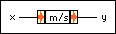

Convert Unit Function
Owning Palette: Conversion VIs and Functions
Requires: Base Development System
Converts a physical number (a number that has a unit) to a pure number (a number with no units) or a pure number to a physical number. Right-click the function and select Build Unit String from the shortcut menu to build and edit a string of units.

 Add to the block diagram Add to the block diagram |
 Find on the palette Find on the palette |